Topology Examples
The following sections show different topologies in a typical building. The topologies are a subset of possible management platform integration in Desigo.
Explanation of Topology Icons. | |
Symbol | Description |
Management platform with a router included | |
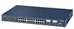 | IP-Router |
BACnet router | |
Automation Station | |
System controller PX KNX | |
Driver Settings
The driver settings for Management platform and Port are the same for all of the following examples.
BACnet Driver Settings | ||
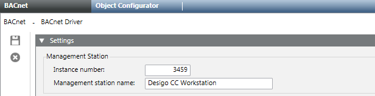 | Instance Number | 3459 |
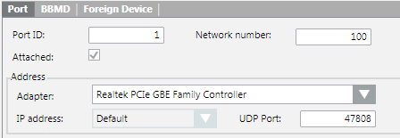 | Port ID | 1 |
Network Number | 100 | |
UDP Port | 47808 | |
Field | Description |
Instance Number | Must be unique like the BACnet device ID. |
Port ID | The port ID is increased automatically as soon as a new connection is added to the BACnet stack. |
Network number | The network number of the BACnet driver must generally match the network number that is being used in the subsystem engineering tool. In case only BACnet/IP devices are used this number is not of relevance. If ,for example, in XWP the network number was set to 100, and Desigo CC uses network number 1, it will still work. However, if BACnet Routers like PXG3.L are used, the network number must match! Otherwise, it will not be possible to connect to the corresponding BACnet network. Further background information can be found in the Desigo Building Automation documentation – Technical Principles (document nr. CM1120664en_10.pdf). |
UDP Port | Enter the port number that is used to communicate with the BACnet devices, for example, 0xBAC0 equals to port number 47808. |
One Segment with Management Platform
Management platform and Desigo automation stations are available in the same IP segment and without an additional router on the network. Only IP automation stations are integrated on the BACnet network.
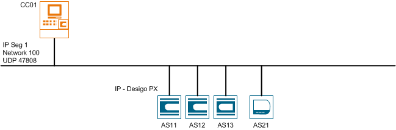
BACnet Driver Settings | ||
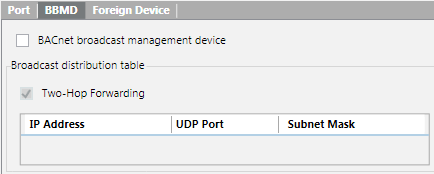 | BBMD | Not used |
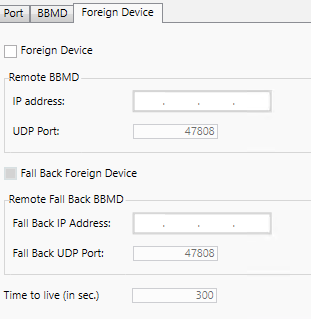 | Foreign Device | Not used |
Two Segments with Management Platform as FD
Management platform and Desigo automation stations are available on different IP segments. The management platform is entered as a participant in the FDT (Foreign Device Table) on the automation station using the FD (Foreign Device). Only IP automation stations are integrated on the BACnet network.
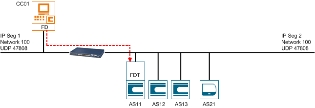
BACnet Driver Settings | ||
BBMD | Not used | |
| Foreign Device | Used |
IP Address | x.x.x.x (to AS11) | |
UDP Port | 47808 | |

Three Segments with BBMD and Management Platform as FD
Management platform and Desigo automation stations are available on different IP segments. The management platform is entered as a participant in the FDT (Foreign Device Table) on the automation station for IP segment 2 using the FD (Foreign Device). The data exchange between IP segments 2 and 3 occurs using BBMD with automation stations 11 and 21. Only IP automation stations are integrated on the BACnet network.
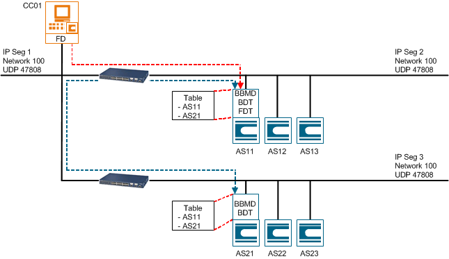
BACnet Driver Settings | ||
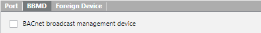 | BBMD | Not used for CC01 |
| Foreign Device | Used |
IP Address | x.x.x.x (to AS11) | |
UDP Port | 47808 | |
Three Segments with Management Platform as FD
Management platform and Desigo automation stations are available on different IP segments. The management platform is entered as a participant on the automation stations for IP segments 2 and 3 using BBMD. The data exchange between IP segments 1, 2, and 3 occurs using BBMD with the management platform and automation stations 11 and 21. Only IP automation stations are integrated on the BACnet network.
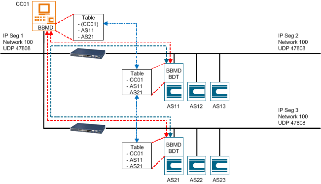
BACnet Driver Settings | ||
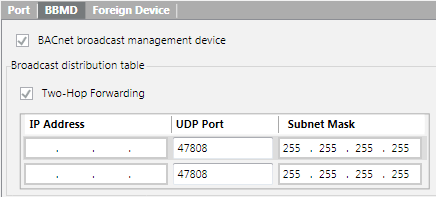 | BBMD | Used |
IP address 1 | x.x.x.x (to AS11) | |
IP address 2 | x.x.x.x (to AS21) | |
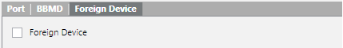 | Foreign Device | Not used |
BACnet Router and Management Platform as FD
Management platform and Desigo automation stations are available on the same as well as on different IP segments. The management platform is entered as a participant in the FDT (Foreign Device Table) on the automation station for IP segment 2 using the FD (Foreign Device). The data exchange between IP segment 100 and 2 occurs using BBMD via the BACnet router for network 100 and 3. The IP automation stations are integrated directly on network 100. The automation stations for networks 1 and 3 are integrated over a BACnet router; devices for network 2 over a MS/TP-BACnet router.
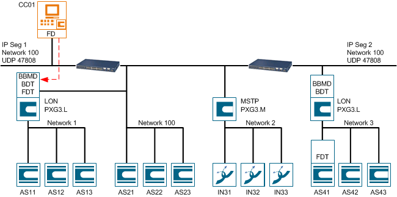
BACnet Driver Settings | ||
BBMD | Not used for CC01 | |
| Foreign Device | Used |
IP Address | x.x.x.x (to LON Router) | |
UDP Port | 47808 | |
Multiple Sites with Management Platform as FD
Management platform and Desigo automation stations are available on different IP segments and different locations in your network. The management platform is entered as a participant in the FDT (Foreign Device Table) on the automation station using the FD (Foreign Device). This topology is often used when connecting different site on your company network. In that case, you must setup different driver for each location. Only IP automation stations are integrated on the BACnet network.

NOTE:
Only Intranet connections are allowed for different locations.
Existing Topology Variant 1
The projects have the same UDP port but different IP addresses used.
Configuration with the Same Field UDP Port Engineered | |||||
project | Location | IP Address | Driver needed | Desigo CC UDP Port | Field UDP Port |
1 | Zug | 10.169.19.xx | 1 | 47808 | BAC0 (47808) |
2 | Baar | 10.169.32.xx | 2 | 47809 | BAC0 (47808) |
3 | Cham | 10.169.43.xx | 3 | 47810 | BAC0 (47808) |
Existing Topology Variant 2
The projects have different UDP port but the same IP address range used.
Configuration with the Different Field UDP Port Engineered. | |||||
project | Location | IP Address | Driver needed | Desigo CC UDP Port | Field UDP Port |
1 | Zug | 10.169.19.xx | 1 | 47808 | BAC0 (47808) |
2 | Baar | 10.169.19.xx | 2 | 47809 | BAC1 (47809) |
3 | Cham | 10.169.19.xx | 3 | 47810 | BAC2 (47810) |
Detail Configuration for Driver 1
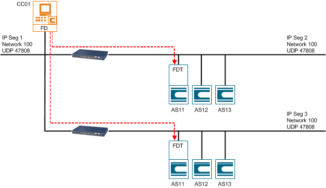
BACnet Driver 1 Settings (Variant 1) | ||
BBMD | Not used | |
| Foreign Device | Used |
IP Address | x.x.x.x (to AS11) | |
UDP Port | 47808 | |